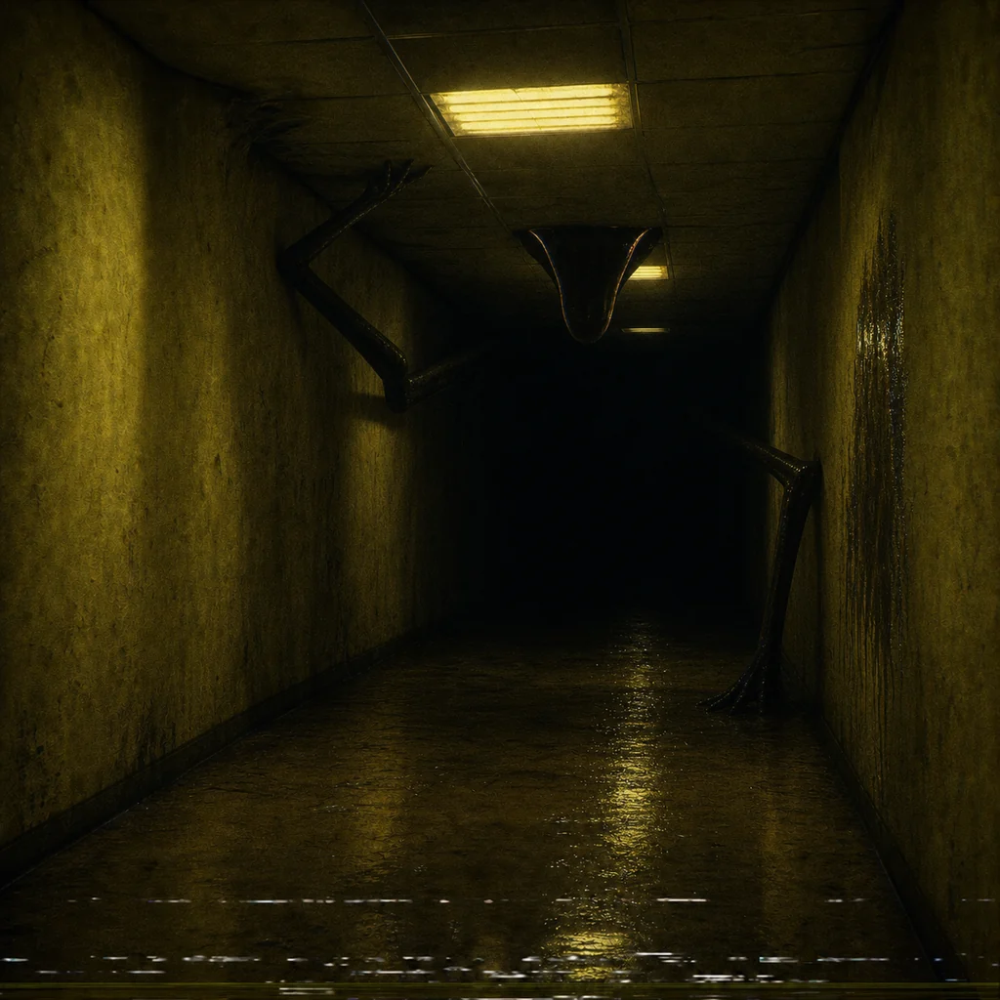

You walk toward the shadow. It does not move away. It gets longer, flatter, more deliberate. The hallway stretches to make room for it, like architecture making accommodations for a god it dislikes.
The thing has no face. It has many approaches. It scrapes the wall with something that might be antler, crown, antenna, or broken fluorescent tube. The sound writes a sentence into the paint: THE CHASE IS CONTENT.
Running makes the corridor hungry. Standing still makes it curious. Naming it makes it hesitate. There is a fox-shaped absence under the emergency light. It is waiting for you to stop performing fear.
name the animal without feeding it